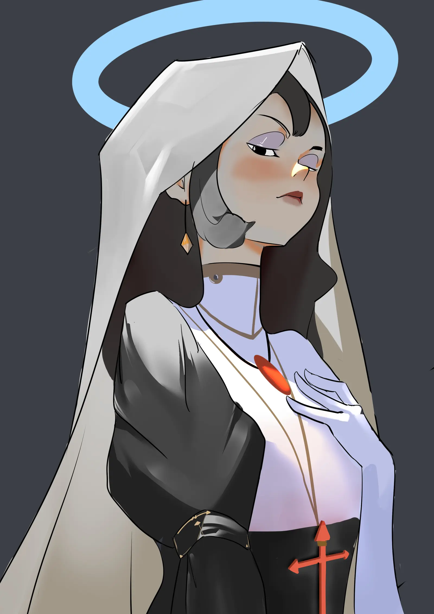
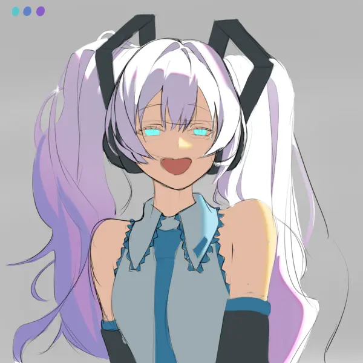
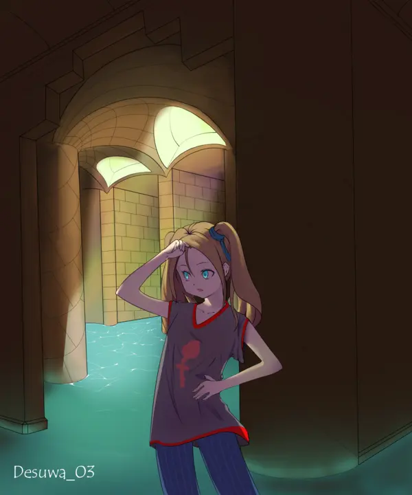
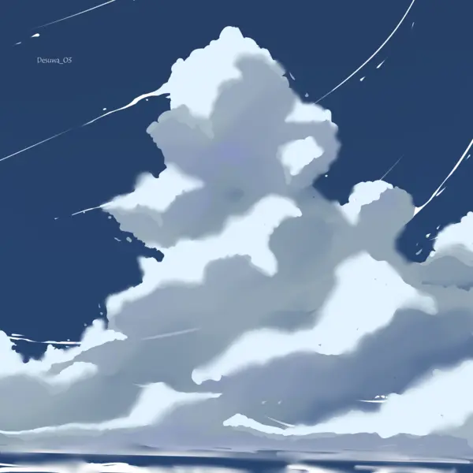
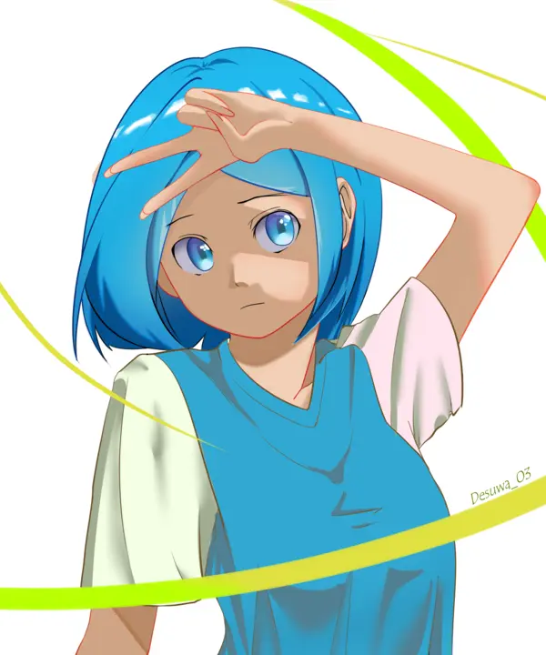
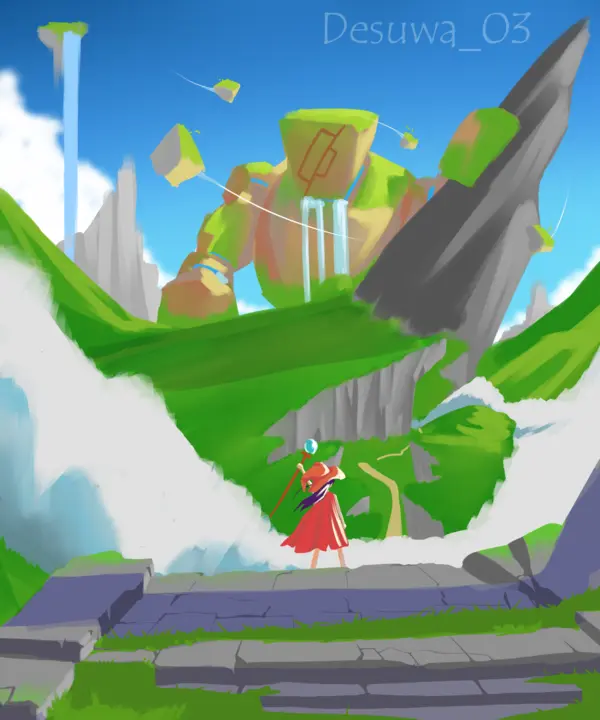
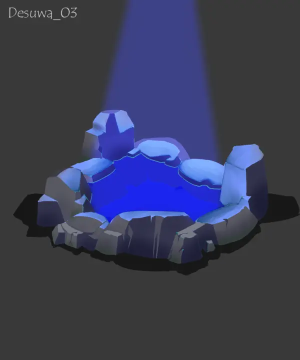

Art Blog
Menggambar dari kanvas kosong selalu jadi cara favoritku untuk menyalurkan imajinasi. Melalui eksperimen visual ini, aku belajar mengeksplorasi konsep, bentuk, dan ide-ide baru yang bisa diterapkan ke dalam karya yang lebih luas.

Menggambar dari kanvas kosong selalu jadi cara favoritku untuk menyalurkan imajinasi. Melalui eksperimen visual ini, aku belajar mengeksplorasi konsep, bentuk, dan ide-ide baru yang bisa diterapkan ke dalam karya yang lebih luas.
Sebagai seorang Game Developer, saya percaya bahwa pengalaman game yang menarik bermula dari gagasan visual yang kuat. Menggambar dan 3D modeling bagi saya lebih dari sekadar hobi, keduanya adalah sarana latihan harian untuk mengasah kepekaan visual. Portofolio karya ini berisi dokumentasi hasil eksplorasi dan latihan mandiri saya dalam menciptakan desain karakter serta estetika visual.
Kumpulan latihan mandiri






